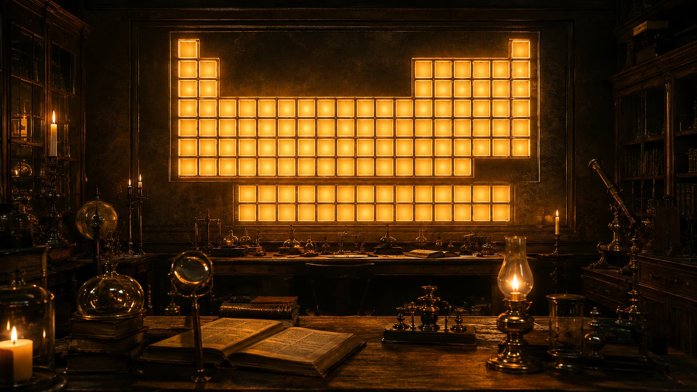

Laboratório das Forças Atômicas
Explore o tamanho dos átomos e descubra como camadas eletrônicas e prótons disputam espaço.
Professora Rafaela
Bem-vindo ao laboratório. Use os controles para aumentar ou diminuir o átomo e entenda o que muda.

Assista à aulaClique em "adicionar camada" para começar.
0 de 3 camadas
Laboratório Concluído
Parabéns!
Você descobriu que as propriedades periódicas não precisam ser decoradas uma por uma. Raio atômico, eletronegatividade, energia de ionização e afinidade eletrônica podem ser compreendidos a partir de uma única ideia: a intensidade da atração que o núcleo exerce sobre os elétrons. Quando essa atração aumenta, o raio atômico diminui — e as outras propriedades mudam de forma previsível.